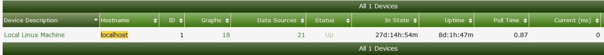
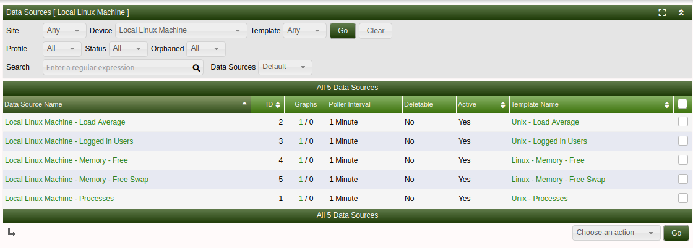

Data sources in Cacti are the points of data that Cacti will collect from a device. The following are examples of different sources that can be utililised for graphing, though is just the surface of what is achievable:
Monitoring a device via ping will usually count as 1 data source.
A 24 port switch and you poll the device via snmp and graph all of the ports then there will be 24 data sources
Note: if you add more graphs that base their data on the original Data source that would not count as another Data Source since it uses the already existing source.
For example, if you have a 24 port switch that you create an In/Out Bits graph for each interface, and you then add the In/Out Bits with 95th Percentile for each interface, you would still only have 24 data sources.
Keeping on top of the amount of data sources you have is important as the more data sources you have the more resources you will need to allocate to your server.
You can see how many data sources are associated with a single device by going to management then clicking on devices.

You can also see the total amount of data sources by checking the poller stats on the system. Click the log tab and filter by stats and lookout for the below messege
2019/05/24 17:21:11 - SYSTEM STATS: Time:9.5913 Method:spine Processes:2 Threads:2 Hosts:14 HostsPerProcess:7 DataSources:162 RRDsProcessed:117
This output tells us we have 162 data sources on the system.
The amount of data sources on your system has an impact on the amount of storage you will need. You will also need to consider what rate you are polling your devices. e.g. 1 minute or 5 Minute polls
Here is the approximate amount of storage you can expect to consume per data source
| Polling time | Retention | File size | Polling time | Retention | File size |
|---|---|---|---|---|---|
| 30 second | Daily | 48kb | 30 second | Weekly | 43kb |
| 30 second | Monthly | 46kb | 30 second | Yearly | 140kb |
| 1 minute | Daily | 93kb | 1 minute | Weekly | 45kb |
| 1 minute | Monthly | 47kb | 1 minute | Yearly | 140kb |
| 5 minute | Daily | 19b | 5 minute | Weekly | 22kb |
| 5 minute | Monthly | 25kb | 5 minute | Yearly | 26kb |
You are able to check the data sources associated to a specific device in the Console -> Management -> Data sources You can then search based on a device you may be interested in to view the Data sources in use

You can also view Orphaned data sources in this view by setting Orphaned from All to Orphaned Orphaned data sources are where the graph has been deleted but the data source was not deleted
Copyright (c) 2004-2024 The Cacti Group